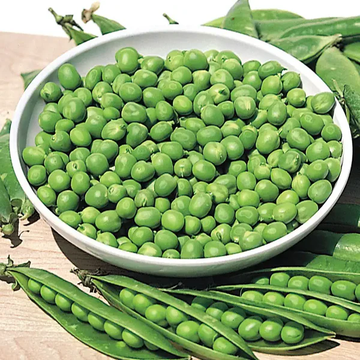

- Cowpeas
- Cowpeas are a type of legume that are high in protein and other nutrients. They are a staple food in many parts of Africa and Asia, where they are used in a variety of dishes.
- Types of Cowpeas
- There are many different types of cowpeas, including black-eyed peas, crowder peas, and cream peas.
- Uses of Cowpeas
- Cowpeas can be used in a variety of ways, including in soups, stews, and salads. They can also be ground into flour and used to make bread and other baked goods.